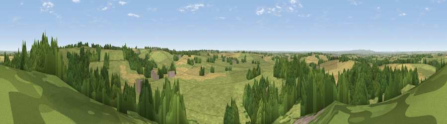

Viewpoint near Billesdon
#15811 in England · top 17% of its area beats it · near BillesdonThe view, rendered

A 360° render of this exact spot computed from the terrain model, tree cover and land cover — summer colours, afternoon light, calibrated against photographs of famous viewpoints. Real trees, hedges and buildings will differ in detail.
The panorama
Grey silhouette: terrain skyline in each direction (720 bearings, Earth curvature and refraction included). Dashed green: skyline with trees (+15 m) and buildings (+8 m) as obstacles. Blue strip: how far the ground is visible on each bearing.
Where the view opens
Wedge length = distance to the farthest visible ground on that bearing (vegetation-aware). Rings at 10, 25 and 50 km.
What fills the view
56% grassland · 26% woodland · 16% cropland · 2% built-up
Angular shares of the visible panorama (visual magnitude), not map area. Landscape diversity 0.45 (0–1 Shannon).
Key numbers
More beautiful places nearby
The staircase of upgrades: each row has a higher view potential than everything closer. Driving times are estimates from straight-line distance, calibrated against real road routing — check an actual route before setting out.
| Place | Direction | Drive | Score |
|---|---|---|---|
| Viewpoint near Cold Newton | NE · 1 km | ~2 min | 57.3 |
| Viewpoint near Burrough on the Hill | NE · 9 km | ~18 min | 66.0 |
| Old John | WNW · 20 km | ~33 min | 70.3 |
| Broombriggs Hill | WNW · 22 km | ~36 min | 74.4 |
| Viewpoint near Woodhouse Eaves | WNW · 22 km | ~37 min | 77.7 |
| Viewpoint near Elmley Castle | SW · 98 km | ~122 min | 80.5 |
| Bredon Hill | SW · 99 km | ~123 min | 83.0 |
| Viewpoint near Great Witley | WSW · 104 km | ~128 min | 83.4 |
52.63295, -0.95347 · source: screening · position refined by local search. Computed location — check access rights before visiting.